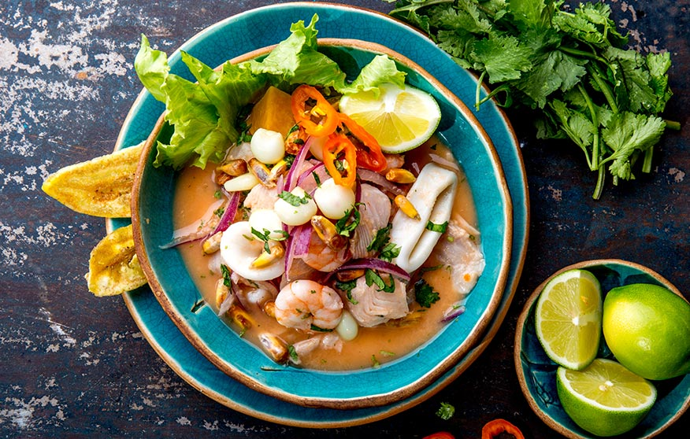
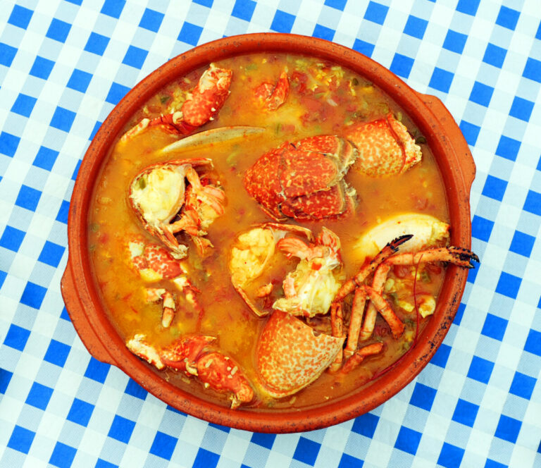
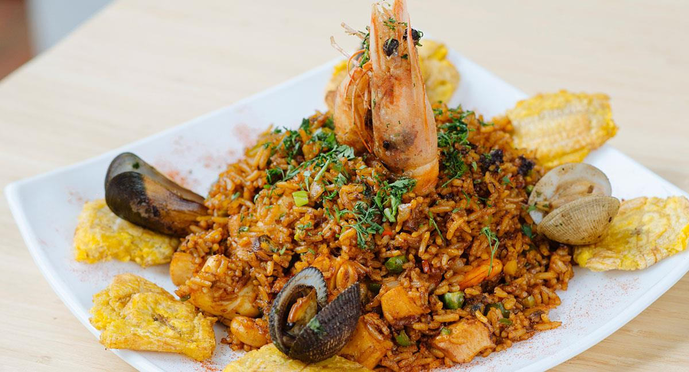
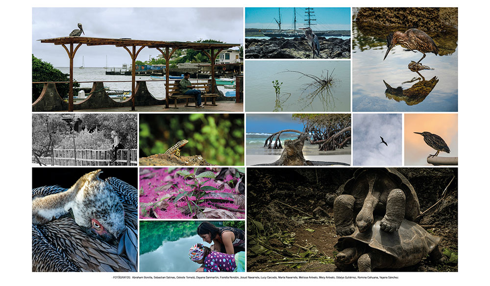
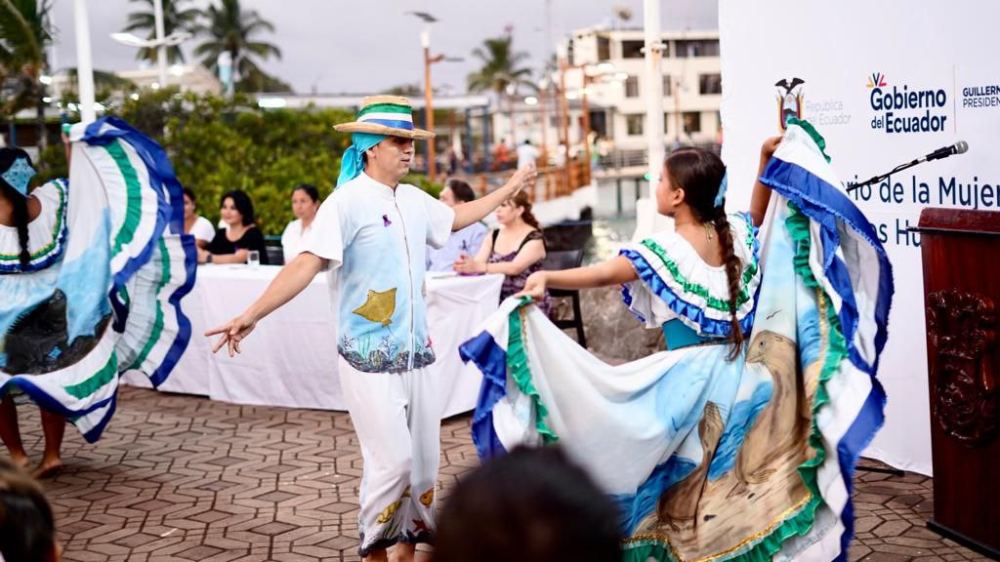

GASTRONOMIA:
Gracias a su ubicación geográfica, el archipiélago ofrece a sus visitantes un amplio abanico de recetas elaboradas con los frutos del mar, como pescado, langosta, langostino y canchalagua, este último es un molusco que existe únicamente en las islas. En la isla San Cristóbal es posible deleitarse con el langostino de Galápagos, un crustáceo que posee un exquisito sabor y se degusta en diferentes presentaciones (en ceviche, al grill, etc.). Debido a las prácticas de pesca responsable implementadas en el archipiélago el langostino se consume en una época fija del año. San Cristóbal fue nuestra favorita también por las opciones de comida. Además de empanadas a 1$ como en el resto de las islas, aquí encontramos nuestros puestecitos de menús de 4$ pero con más calidad de la que habíamos encontrado en Isabela y en Santa Cruz. Aquí nos pusimos de langostinos, ceviche y pescado hasta arriba; todo muy rico y bastante abundante! ¿Dónde? En los puestos de comida que hay al entrar en Playa Mann; un pequeño patio de comidas con sólo tres locales que ofrecen almuerzos y cenas a 4$ (5$ si quieres añadir una sopa de primero) y en los que podrás comer desde pescado fresco hasta una milanesa de pollo con queso.EL CEVICHE DE CANCHALAGUA
El ceviche de canchalagua es una comida popular en todo Galápagos, especialmente en la isla de San Cristóbal, la más oriental de todas. Este plato es una de las comidas ecuatorianas más codiciadas y exclusivas. La razón es que solo lo podrás consumir en 3 de los 20 restaurantes que están en las islas. La canchalagua es un molusco propio del lugar. Tiene una textura muy parecida a la del pulpo, pero su sabor te recordará al de las almejas y conchas. Su preparación es sencilla, muy similar a la del ceviche de camarón o de pescado. Pero a diferencia del ceviche tradicional, este sabroso molusco de color blanco se sirve acompañado de una porción de arroz, patacones o chifles, canguil y aguacate. Verdaderamente, una exquisitez. 
SOPA MARINERA
sopa de mariscos es una receta muy típica y tradicional de las islas Galápagos, en una sopa de mariscos se pueden añadir todo tipo de alimentos del mar, es decir, pescados y mariscos. 
ARROZ MARINERO
También conocido como arroz con mariscos, es un plato muy popular no solo en las islas Galápagos y Ecuador, sino en toda América Latina. Es un plato tradicional de las zonas costeras y, por este motivo, se encuentra entre los principales de Galápagos. 
COSTUMBRES
Entre las costumbres de las islas se encuentran las fiestas de provincialización en febrero que incluyen limpieza comunitaria y eventos culturales, las fiestas patronales en agosto en honor a la virgen del campo, y las fiestas de Santa Agueda en febrero que involucran encender hogueras y procesiones religiosas. 
FIESTAS DE PROVINCIALIZACIÓN SAN CRISTOBAL
Avanzando rápidamente hasta el 18 de febrero de 1973, Galápagos fue declarado oficialmente como la 20ª provincia del Ecuador, con Puerto Baquerizo Moreno como su capital, acompañado por el establecimiento de dos cantones, Santa Cruz y San Cristóbal, finalizando con la creación del cantón Isabela el 16 de marzo del. 
| Nombre de la Festividad | Fecha | Descripción |
|---|---|---|
| Fiesta de san cristobal | Julio | Celebración con desfiles, música, bailes y fiestas en las calles. |
| Festibal Barraco Internacional Cervantes | Finales de Octubre | Eventos culturales y artisticos. |
| Carnaval y rituales de purificación | junio 20,22 | Conmemoración y desfiles |
| feria de la primavera y de la paz | 7 de abril | desfiles, juegos mecánicos, concursos, conciertos y eventos culturales. |
| Fundación de la Ciudad | 31 de marzo | fundación de la ciudad, con desfiles, juegos pirotécnicos y música de marimbas. |